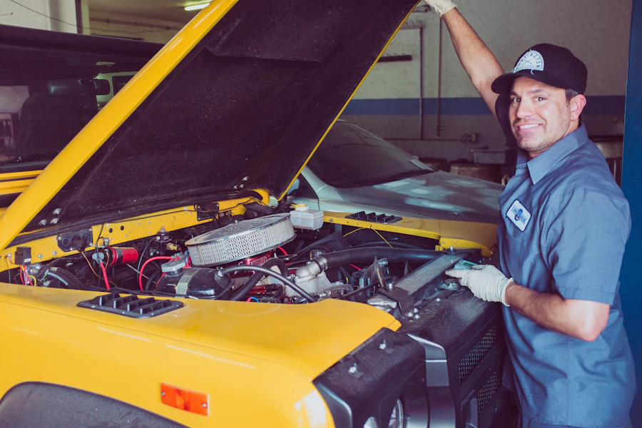

Un téléphone, un comptoir.
Le plus court chemin vers votre pièce reste le téléphone : stock, état et prix annoncés immédiatement, pièce mise de côté à votre nom.
P.A.C. Pièces Auto Cass
25 rue Gay Lussac · ZI Toulon Est
83210 La Farlède · Var
Fax : 04 94 08 66 39
Carte bancaire acceptée · retrait au comptoir · accès PMR · parking sur place.
Itinéraire Google Maps (nouvelle fenêtre)| Lundi | 8h–12h · 14h–18h |
|---|---|
| Mardi | 8h–12h · 14h–18h |
| Mercredi | 8h–12h · 14h–18h |
| Jeudi | 8h–12h · 14h–18h |
| Vendredi | 8h–12h · 14h–18h |
| Samedi & dimanche | Fermé |
| Jours fériés | Fermé |
Venir à la ZI Toulon Est
La zone industrielle Toulon Est se trouve au sud de La Farlède, à une dizaine de minutes du centre de Toulon par l'A57 (sortie La Farlède). La rue Gay Lussac dessert la zone; le comptoir P.A.C. est au numéro 25, avec parking devant l'entrée.
Avant de vous déplacer pour une pièce précise, appelez le 04 94 08 15 33 : vous éviterez un aller-retour si la référence demande un délai, et la pièce vous attendra au comptoir si elle est en stock.
Vous êtes un professionnel ?
Garagistes, carrossiers et mécaniciens du Var travaillent avec P.A.C. depuis des décennies. Présentez-vous par téléphone : le comptoir connaît les contraintes de l'atelier et répond en conséquence, référence en main.
